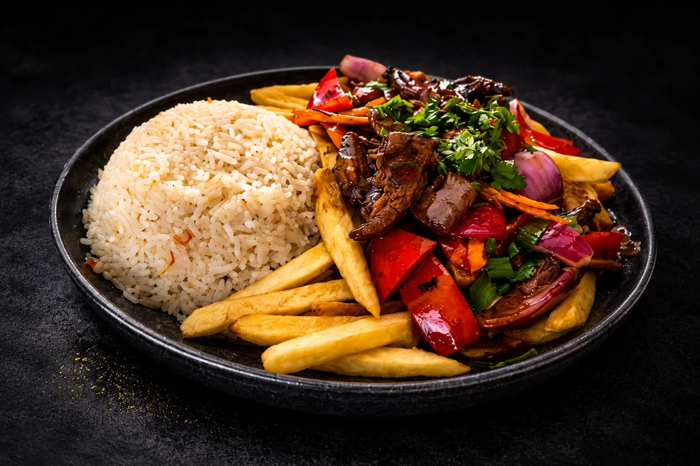
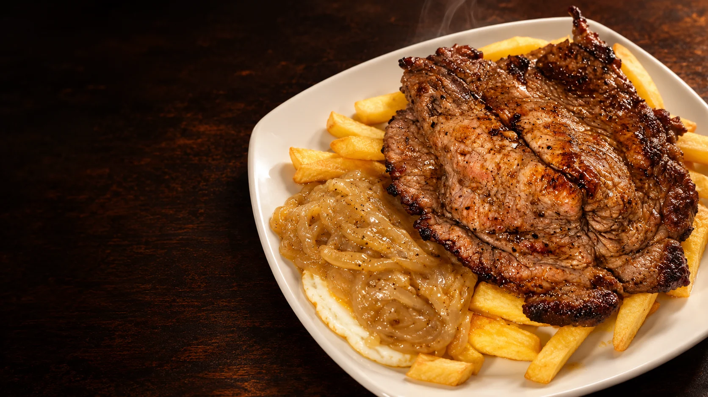
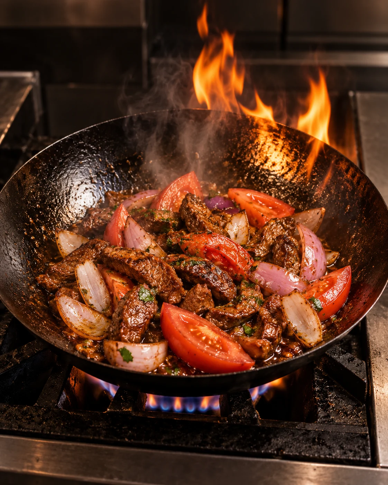
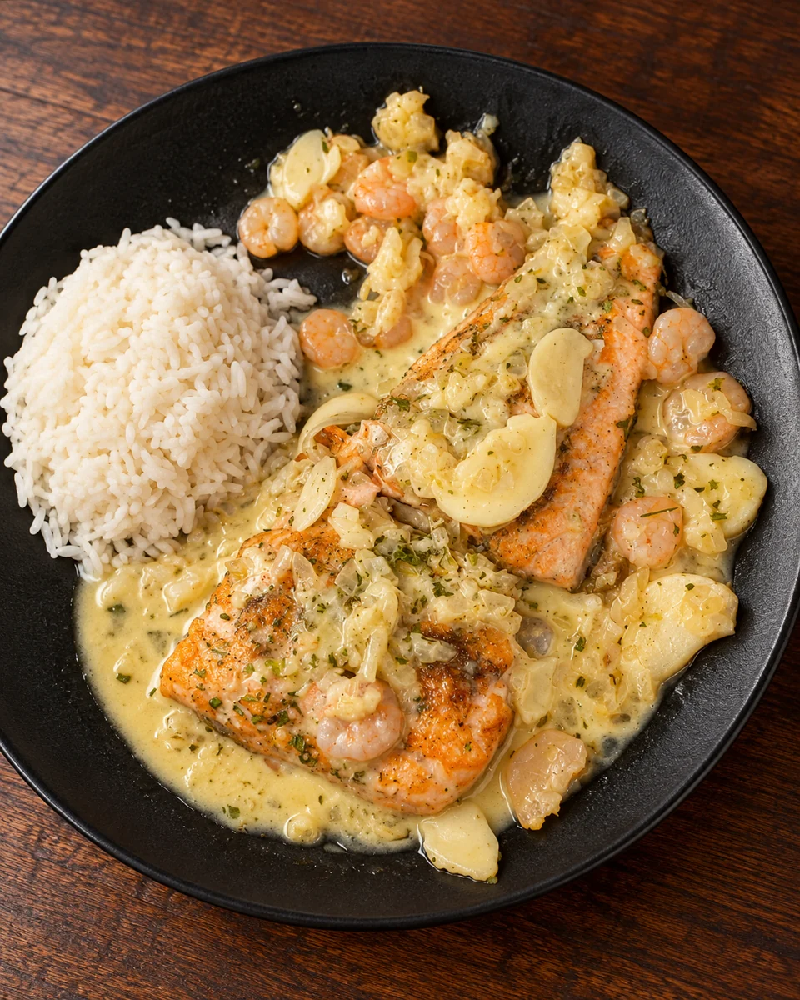
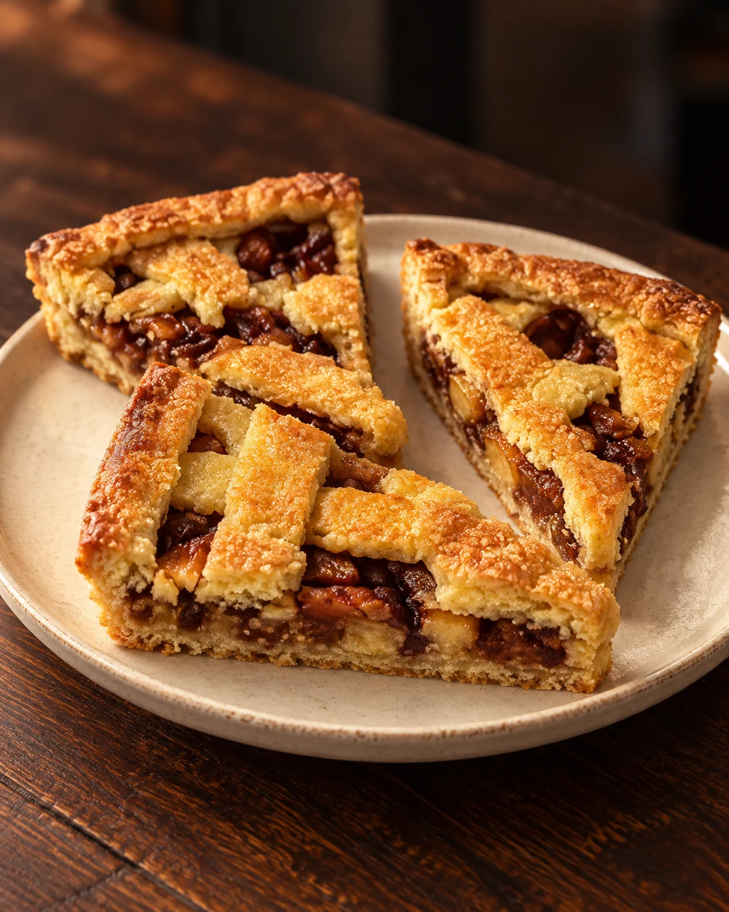

EL CLÁSICO PERUANOLomo saltado
$15.000Lomo flameado al wok con verduras, soya, ajo y kion. Acompañado de arroz graneado y papas fritas.
Consultar plato
VALLENAR · VALLE DEL HUASCO
El carácter de Chile y el alma del Perú.
Cocina para disfrutar sin prisa, compartir
y volver a encontrarnos.
BIENVENIDOS A LA CASONA
Una conversación que se alarga. El aroma que llega desde la cocina. Ese primer bocado que invita a compartir.
En La Casona del Virrey reunimos la cocina chilena, la tradición peruana y la fuerza del wok en una misma mesa. Un punto de encuentro en Vallenar, del café a los brindis.
Vive la experiencia Virrey
EL RITUAL DEL FUEGOLA ESENCIA ESTÁ EN LA COCINA
El wok se enciende, los ingredientes se encuentran y cada plato toma vida. Lomo saltado, chaufas y tallarines: preparaciones al momento, con ese sabor que invita a volver.
CADA MOMENTO TIENE SU SABOR
Del primer café al último brindis.
Quédate un poco más.

Salmón al ajillo con salsa de camarones y un delicado toque de vino blanco.
Pisco sour, mojitos de sabores y coctelería para acompañar la conversación.

Café de grano y algo dulce. Un pequeño momento para disfrutar sin apuro.
LA PRÓXIMA OCASIÓN LA ELIGES TÚ
Una comida en pareja, una mesa con amigos o una celebración. Cuéntanos cuándo te gustaría venir.
+56 9 5302 3936¿Una celebración especial? Conversemos.
NOS ENCONTRAMOS EN VALLENAR